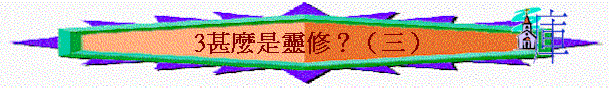

教師版
Ｅ）境界及標準
１）從虛假到真實
ａ）虛假
初信主為很重外表的，很尊重長者及愛模仿人，但若停留此地步為危險，因很多時只得到外表而不是內裡的生命。有外表而無真實的內涵使人成為虛假。
ｉ）自滿自誇
初信主著重外表，加上情緒高漲，易以別人不屬靈或不長進，從而輕看人，產生自滿，還以自己比別人好。
ｉｉ）自欺欺人
因注重外表的我，忽略內裡的我，使人為自己的外觀所欺騙。但因內涵不夠，又怕人看透自己，人會裝假來欺騙人，假冒屬靈及長進，又要常披上虛假的外殼，這是一件痛苦的事情。
ｂ）真實
外表的模仿是無可厚非，但重要在進入內裡的真實，要明白「是」與「作」的分別，從裡面出來的才是我們真正的本相。
ｉ）從外到內
要由外表的條文，進到內裡的愛慕，外表的作與不作乃次要，重要為內裡愛慕與否。外在環境會限制一個人的行動，獨處時才真顯露人內裡的生命。
ｉｉ）自然流露
生命不是搾出來，乃是自然流露，為自自然然的表彰出來，要強逼、要用力壓制表示還未成熟（但有階段性）。
例：以行沙──只經過及喫飯就叫人知他為『聖潔』的神人，王下四：８—９。
例：但以理──裡頭有聖神的靈，但五：１１，在這時正處於事業上的低潮，仍不失去靈性美好的光景，更為後宮的人知其靈性美好。
例：主耶穌──只與人同住一夜即叫人知祂是彌賽亞，約一：３９—４１。
２）從膚淺到深廣
在生命追求中，豐盛的生命為正常的基督徒所羨慕，沒有一個人會否認這事實，但現實生活中的我們，所遇到的問題不是沒有生命，乃是只有膚淺的生命，與聖經所應許的不同。這種膚淺的生命使我們感到討厭，因常感到有心無力，面對理想與真實的矛盾，帶來我們靈性的自我控訴及情緒低落。
ａ）字句上我們很喜歡感受及領受，又愛慕屬靈的字句運用及表達上的流暢，常以此等表現來評定靈修生活的理想與否。但卻沒有真實的活在從 神所得的亮光中，因著這種拘泥於字句的表現，我們長期不自覺的忽略了精義，引致在屬靈生命上產生真空，使我們所認信的生命；與我們真正的生命實況相差太遠，帶來靈性上的困擾及意志消沉。
另方面太注意感受，加上在運用理性上的懶惰，會使我們在靈修的讀經上有偏好的情形出現，引致對 神及在真理上有偏差的認信，為我們自己的靈命流下破口，因長期的靈性偏食，使我們易落入靈裡的沉悶。例：單讀詩篇、單讀新約。
要留心聖經是一個整體，全面的認識真理會使我們活得準確，又會使我們常有得著及對 神及真理有新鮮的體會。
真實的屬靈生命是應從字句上進入精義，又由亮光中化作行動，並從言語表達出生命的真實內涵。如彼此洗腳（字句）──→彼此相愛（精意）──→生活上的關懷（行動）──→代禱及勸勉（經歷）
Ｐ．５
ｂ）數字上有時靈修落入重擔中，是因我們太注意所讀的章數；或所用的時間多少。有的人把讀經追求放入靈修中，以數字來宣傳及榮耀自己，常抱一個要超越別人的心，這種的做法使人只注意完成一件事情，而沒有看重在當中與 神相交。真正的靈修讀經不在乎數量，而在乎有 神的說話否。
有的人又太拘泥於時間上的數字，以不足所定的時間便拖延靈修，甚至不靈修，或有的趨向另一極端，以靈修不必為時間所限制，從而放任自己落入不足夠及不穩定的靈修中，要知不足夠的靈修培養出不成熟的生命，不穩定的靈修帶來不穩定的靈性，沒有靈修生命則使靈命停滯及倒退。我們需要有穩定及足夠的時間來親近 神，但在忙碌的時候，需要有簡短而精深的親近，寧可短也不要停，另方面要再調節自己的生活節奏。例：縮減唱詩的時間，縮減所讀的章節。
ｃ）自我上
我們人性中的毛病是太過注意自己，易有自私自利的表現。另太注意別人對我們的看法，故此我們或為了滿足別人的看法而生存，逼使我們作出種種的妥協，或生出自責自貶的心態來，這兩樣都帶來心靈上的壓制，失去了 神賜的喜樂，令人在靈修生活中失卻了焦點── 神。要從自我轉向 神自己，留心甚麼是會 神心意比人所喜愛更重要，這樣才能有真正的靈修生活。
３）從人性到 神性
ａ）人性
人因犯罪離開了 神，人的人性已被扭曲了，故此人雖有 神殘餘的性情，但所表現的人性卻是醜陋的，即是聖經中最好的聖徒也有人性醜陋的一面，即使有 神生命的人也有醜陋人性的枷鎖。例：亞伯拉罕有不信、摩西發怒、大衛犯姦淫、以利亞灰心喪志、彼得裝假及保羅有妥協及膽怯。
ｂ）從人性進入神性
神救贖了我們，是把祂自己的生命賜給我們，我們已得與 神的性情有份，靈修生活的目的是要把我們從 神的性情活出來，又把從亞當而來的性情棄絕。我們嘗試從保羅及施洗約翰的話來看這題目：
「我已經與基督同釘十字架，現在活著的，不再是我，乃是基督在裡面活著。」 加二：２０
「因我活著就是基督．．．．．．」腓一：２１
「這新人在知識上漸漸更新，正如造他主的形像。」西三：１０
「祂必興旺，我必衰微。」約三：３０ 原意是：「祂必漸漸興旺，我必漸漸衰微。」
簡單來說，靈修生活是叫我們的人性漸漸消失，漸漸進入（活出） 神的性情。這是一個進程，是需要時間來完成，並需要聖靈來幫助，因人是無力來改變自己的生命習性，故此我們需要讓聖靈常在我們身上有管治，這樣我們的靈性必會好的成長。
學生版
Ｅ）境界及標準
１）從虛假到真實
ａ）虛假
ｉ）自滿自誇
ｉｉ）自欺欺人
ｂ）真實
ｉ）從外到內
ｉｉ）自然流露
２）從膚淺到深廣
ａ）字句上
ｂ）數字上
ｃ）自我上
３）從人性到 神性
ａ）人性
ｂ）從人性進入神性